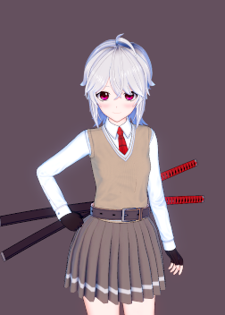

Dossier scan


Operator Anna
Name: Anna Kozak
Codename: OG
Access Level: 5
Status: Alive
Rank: [DATA LOST]
ID: 001
Current occupation: Head of Valhalla Covert Operations Division
Psychological profile:
Despite her recent recovery from amnesia, Operator does not show any signs of significant mental issues. It has been noted that Anna Kozak displays almost complete apathy towards the enemies of Valhalla and will not hesitate to eliminate all threats to CEO Irimasen and Valhalla staff.